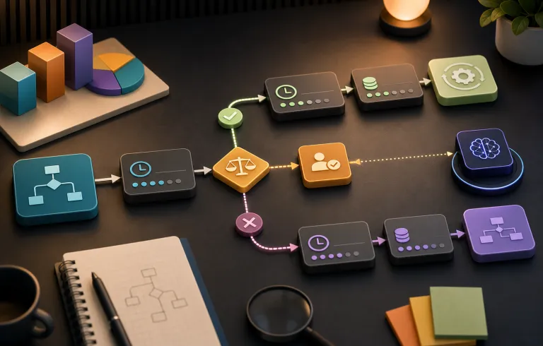
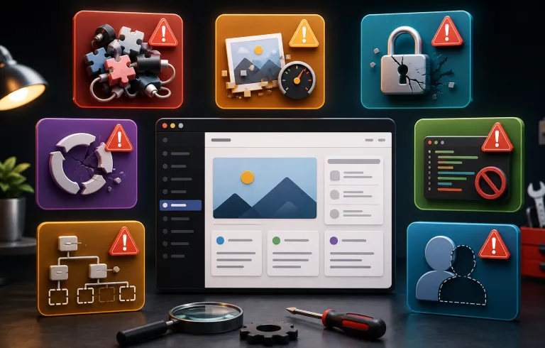

21 octubre 2026
21 octubre 2026BLOG SOYDIAZ
Desarrollo web empresarial, Drupal, WordPress, PHP, IA y automatización.
21 octubre 2026Cómo diseñar un flujo de IA con supervisión humana
Leer artículo → 21 octubre 2026
21 octubre 2026Qué es MCP (Model Context Protocol) y por qué le importa a tu empresa
Leer artículo →Qué es un agente de IA y cuándo lo necesita una empresa
Leer artículo →
21 octubre 2026Agente de IA vs automatización vs chatbot: cuál necesita tu empresa
Leer artículo →Accesibilidad web empresarial: decisiones que mejoran la experiencia
Leer artículo →Mantenimiento web empresarial: un plan preventivo para tu plataforma
Leer artículo →SEO técnico para sitios empresariales: una base que facilita crecer
Leer artículo →IA en procesos empresariales: dónde aporta valor y cómo supervisarla
Leer artículo →19 septiembre 2026Integraciones API: cómo conectar una web con CRM y ecommerce
Leer artículo →Seguridad en WordPress y Drupal: una rutina que sí se puede sostener
Leer artículo →Rendimiento web empresarial: qué medir antes de optimizar
Leer artículo →Cómo planificar una migración web sin perder SEO
Leer artículo →Drupal o WordPress: cómo elegir un CMS para tu empresa
Leer artículo →
24 agosto 20267 errores que veo en sitios WordPress
Leer artículo →Cuando una web tiene que comunicar y operar
Leer artículo →Qué hace diferente a un buen desarrollador web empresarial
Leer artículo →5 automatizaciones que puedes añadir a una web
Leer artículo →Cómo saber si una empresa realmente necesita IA
Leer artículo →Drupal vs WordPress: Una Comparativa para la Era de la IA
Leer artículo →El error de usar IA para escribir código sin entender la arquitectura
Leer artículo →21 agosto 2026Qué sí automatizar con IA en desarrollo web
Leer artículo → 20 agosto 2026
20 agosto 2026